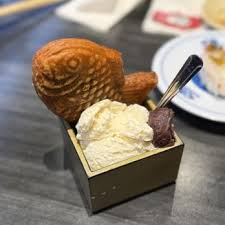
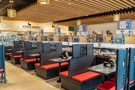
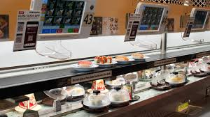
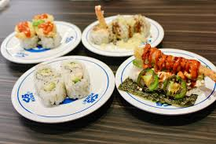

My first time
So one day i was out with my girlfriend at the freehold mall shoping and just having a good time together. we planed on going to the cheesecake factory after since its right outside the mall and as we were heading there was saw a sci-fi kinda futruistic looking food spot, I said "i think i seen this on tiktock, its like a revolving sushi place" (ive never had sushi before at this time) so we went inside to ask the workers what it was and they basicaly told me i was right and that they had just opened up. so I look at zoe "do u wanna try this instead?" she said "yeah sure" so we sat down kinda confused because like how do you pay for the food if im just grabing it when it comes past me. but beside all that, that sushi spot is now me and Zoes go to spot. in all seriousness the food was really good and its only around $3-$4 a plate and they have a lot of different options to choose from, not only sushi. I would highly recommend it to anyone who is looking for a new place to eat or just wants to try something new.
My favorite part

idk what in the world this is but it was SOOOOOO good! it was like some special vanilla icream and the fish thing is aparently a sesame cookie thing? idk if you go to kura GET THIS 10/10 desert.
My 2nd favorite part

AWWWW MANNNN this is my BOY bobert, hes a robot that delivers your drinks and plays music and i remeber when i first came and saw a robot come give me my drinks, first I did not see that coming at all and secondly i already knew i was gonna have a good time. bobert has to be the best part of the whole experience its js somthing the place does that gives it that unique experince.
Gallery



these are just a few images i thought i would include